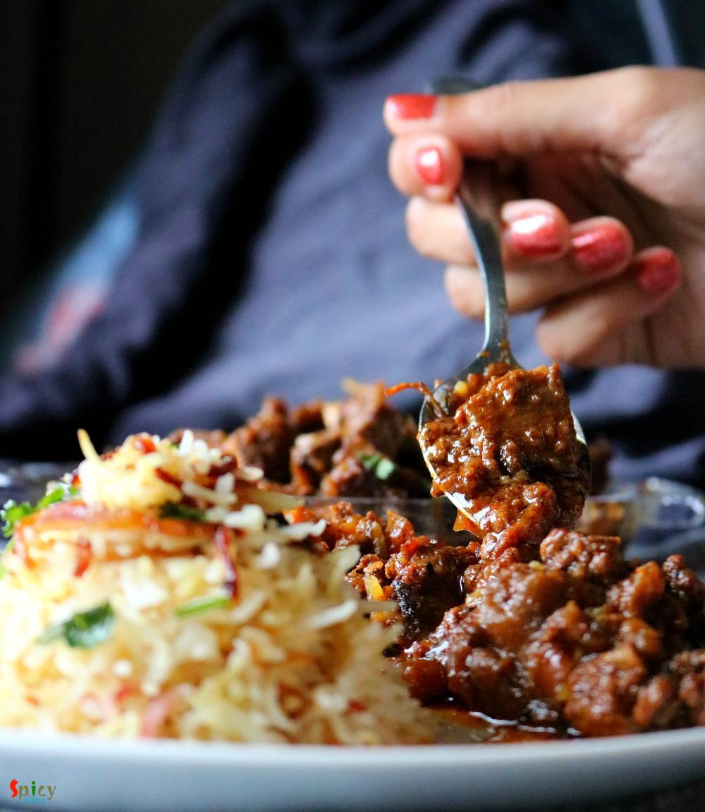

Simple and Easy Recipes
Himachali Rara Mutton
© 2016 Spicy World, Published on: Jul 18, 2018
This dish was invented in dhabas from Himachal Pradesh. Nowadays it is available in almost every dhaba and restaurant. Its a very different recipe as it requires mutton pieces along with some minced mutton. Can you imagine that whenever you will scoop up some gravy with naan or roti there will be loads of Keema .... how delicious that sounds ! This dish goes best with Biriyani, Pulao and Butter naan. Try it in your kitchen and let me know how it turns out for you.

Ingredients
- 500 gms of curry cut mutton pieces.
- 100 gms of minced mutton.
- 1 large onion, sliced.
- 1 Tablespoon of ginger garlic green chili paste.
- 1 small tomato, sliced.
- 2 Tablespoons of yogurt.
- Salt and sugar.
- 1 Tablespoon of red chili powder.
- 1 Teaspoon of kashmiri chili powder.
- Whole spices (1 Teaspoon each of cumin seeds, black cumin seeds, coriander leaves, black peppercorns, 4 cloves, 5 green cardamom, 2 small cinnamon sticks)
- 1/4th cup of cooking oil.
- 2 cups of hot water.
- Some chopped coriander leaves.


Steps
Dry roast all the whole spices in a pan. You can also add few blades of mace. Then grind them to a fine powder.
Heat oil in a pan and fry the washed mutton pieces for 5 minutes.
Now add the onion slices with some salt. Cook for 15 minutes.
Then add tomato slices and cook for 2 minutes.
Then beat the yogurt with some water and pinch of sugar. Add that in the pan, mix well for 3 minutes.
Add that prepared dry roasted powder and cook for 3 minutes.
Then add 2 types of chili powder and cook for 2 minutes.
Now time to add minced mutton and mix well for 10 minutes.
Then add hot water and some more salt. Cover and ook until the meat becomes soft. You can use pressure cooker if in hurry.
Garnish it with chopped coriander leaves.
Your Himachali Rara Mutton is ready.
Serve this with biriyani, pulao or naan.
")